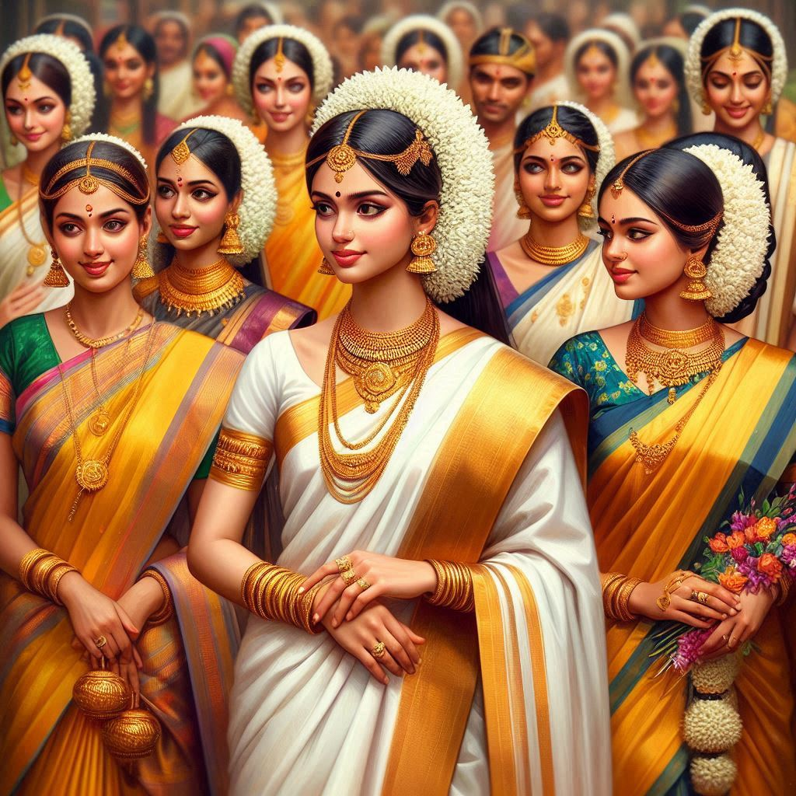
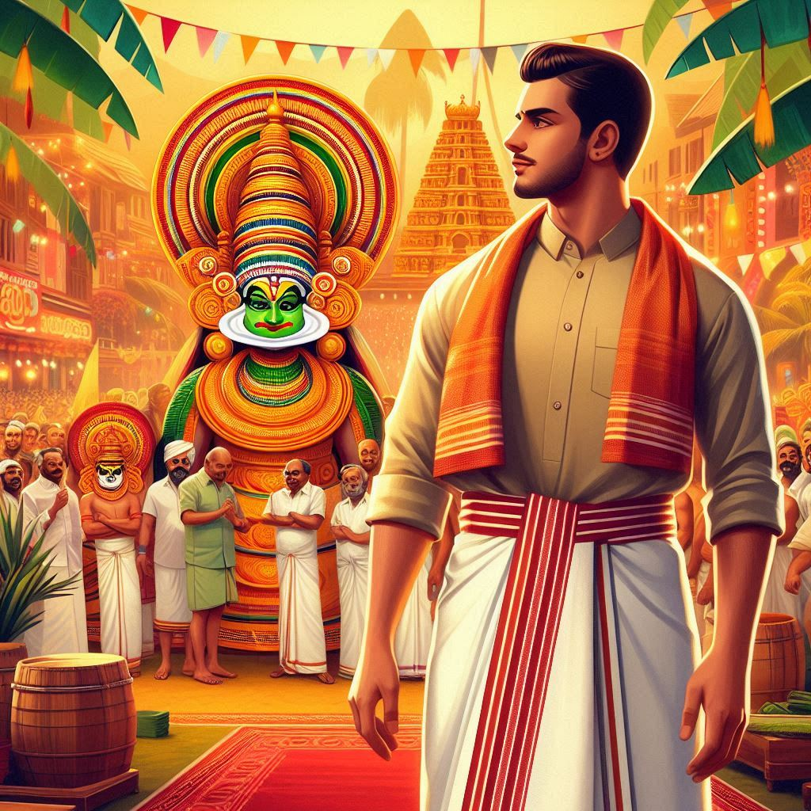

The traditional dress of Kerala reflects its rich culture, heritage, and simplicity, with clothing that is often made from natural fabrics like cotton. The attire is characterized by its distinctive style, elegant colors, and the use of gold borders, especially in ceremonial clothing. Here is an overview of traditional dress in Kerala:
1. Traditional Dress for Men:
- Mundu: The mundu is a white garment worn around the waist and extends down to the feet. It is similar to a long skirt or dhoti and is often worn for both everyday and special occasions. Mundus often have a kasavu border (golden embroidery) for festivals and ceremonies. Men usually wear a shirt or an angavastram (a cloth draped over the shoulders) with the mundu.
- Mundu and Neriathu: This combination consists of a mundu worn on the lower body, paired with a neriathu (a cloth draped over the shoulders). The neriathu may have a kasavu border, making it suitable for festive occasions.
- Lungi: For informal or casual wear, men in Kerala may wear a lungi—a colorful garment tied at the waist.
2. Traditional Dress for Women:
- Set Mundu (Mundum Neriyathum): The set mundu, also known as the mundum neriyathum, is a two-piece attire made of white or off-white cloth with a golden border (kasavu). The first piece is worn around the waist, and the second is draped over the upper body, much like a saree. This traditional attire is worn during festivals, weddings, and special occasions and is regarded as Kerala's equivalent of a saree.
- Saree: Women in Kerala also commonly wear sarees, particularly those made from Kasavu fabric with a gold border. Kerala sarees, known as Kasavu sarees, are highly popular for special occasions and festivals like Onam and weddings.
- Pattupavada: Young girls traditionally wear pattupavada, a skirt-blouse set made from silk or cotton with decorative borders.


3. Jewelry and Accessories:
- Necklaces and Chains: Women often wear multiple gold chains, including traditional designs like the mulla mottu mala (jasmine-bud necklace).
- Bangles and Earrings: Intricate gold bangles, jhumkas (earrings), and anklets are worn.
- Kuduma (Hair Accessories): Women adorn their hair with jasmine flowers, especially for weddings and festivals.
4. Contemporary Clothing Influence:
While traditional attire remains popular during festivals, weddings, and temple visits, modern influences are seen in daily wear, with many opting for western attire, salwar kameez, and modern saree drapes in everyday life. The traditional attire, however, remains an essential part of Kerala’s identity and cultural pride.
Conclusion:
Kerala’s traditional dress stands out for its simplicity, elegance, and the use of gold embellishments. Whether it’s the classic set mundu for women or the white mundu for men, the attire reflects the state’s affinity for minimalistic beauty and a deep connection with its cultural roots.